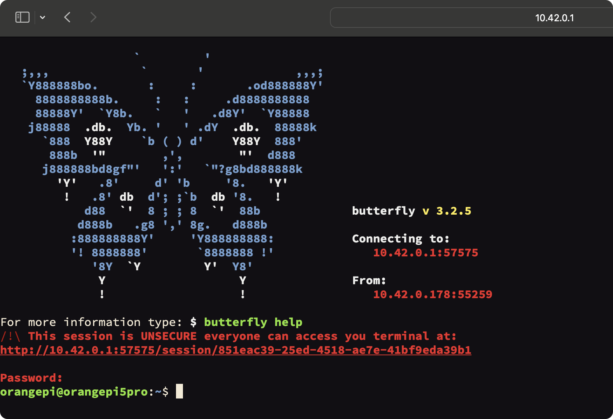

Для редактирования файлов, ввода команд и работы с файлами можно воспользоваться Butterfly Web Terminal. Он представляет собой полный аналог ssh-подключения терминала, но при этом удобнее, так как находится среди остального функционала web terminal
Доступ к терминалу доступен через веб-браузер (с использованием Butterfly). Для доступа откройте страницу http://10.42.0.1:8000/technic и выберите на ней ссылку Open web terminal
Пароль:
orangepi
